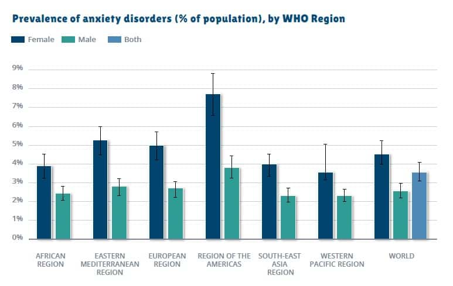

Anxiety is a real disorder that can cause an intense feeling of fear or worry that
affects women in everyday situations. Anxiety can often cause intense feelings of fear,
<<<<<<< HEAD
anxiety, and/or terror during repetitive episodes known as Panic Attacks. Women are
twice as likely than men to be diagnosed and affected with anxiety during their lifetime.
Diagnoses can be early as childhood or teenage years that continue during adulthood.
=======
anxiety, and/or terror during repetitive episodes known as Panic Attacks.
Women are twice as likely than men to be diagnosed and affected with anxiety during their lifetime.
*Diagnoses can be early as childhood or teenage years that continue during adulthood. *
>>>>>>> 827fb4144f0a60486956cf646e692208c753d143
How affect women

Women are known to be more proned to stress, which directly correlates with the development of anxiety disorders.
<<<<<<< HEAD
Symptoms
- Feeling nervous, restless or tense
- Having a sense of impending danger, panic or doom
- Having an increased heart rate
- Breathing rapidly (hyperventilation)
- Sweating
- Trembling
- Feeling weak or tired
- Trouble concentrating or thinking about anything other than the present worry
- Having trouble sleeping
- Experiencing gastrointestinal (GI) problems
- Having difficulty controlling worry
- Having the urge to avoid things that trigger anxiety
=======
Symptoms of anxiety include:
-Feeling nervous, restless or tense
-Having a sense of impending danger, panic or doom
-Having an increased heart rate
-Breathing rapidly (hyperventilation)
-Sweating
-Trembling
-Feeling weak or tired
-Trouble concentrating or thinking about anything other than the present worry
-Having trouble sleeping
-Experiencing gastrointestinal (GI) problems
-Having difficulty controlling worry
-Having the urge to avoid things that trigger anxiety
*If you or someone you know express one or more symptoms, please seek professional help.*
>>>>>>> 827fb4144f0a60486956cf646e692208c753d143
*If you or someone you know express one or more symptoms, please seek professional help.*
How to seek medical health
<<<<<<< HEAD
Seeing your primary care provider is the first step for seeking help for being diagnosed
for your anxiety. They can check for underlying physical symptoms that you or someone you know may be having.
Although, seeing your primary care provider is good for diagnosis, seeing a psychiatrist for severe anxiety, and
diagnosing, can be more beneficial as they specialize in diagnosing and treating mental health conditions.
=======
Seeing your primary care provider is the first step to seeking help for a diagnosis. Your primary healthcare provider
can check for underlying physical symptoms that you or someone you know may be having.
Although seeing your primary care provider is good for diagnosis, seeing a psychiatrist for severe anxiety can be more beneficial as they specialize in the diagnosis and
treatment of mental health conditions.
>>>>>>> 827fb4144f0a60486956cf646e692208c753d143
How to Help Others
<<<<<<< HEAD
=======
Learn more about Anxiety
The more you learn about anxiety, the more you'll understand what exactly is going on with your friend or family member.
>>>>>>> 827fb4144f0a60486956cf646e692208c753d143
Learn more about Anxiety
The more you learn about anxiety the more you'll understand what exactly is going on with your partner.
<<<<<<< HEAD
Acknowledge the impact your actions has on your partner
=======
Acknowledge the impact your actions has on your friend/family member/li>
>>>>>>> 827fb4144f0a60486956cf646e692208c753d143
It's important to recognize that what you do can affect your partner in a way that may be counterintuitive to what their conditions require.
Seperate who your friend/family member is from their symptoms and behaviors
Instead of labeling them "irresponsible", recognize their forgetfulness. Remember, symptoms aren't characteristics.
How to talk with them
Make sure they feel loved and accepted for who they are, and let your friend/family know that you will do your best to support them in any necessary way.